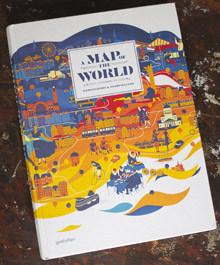

One of the companies we’ve worked closely with over the last few years is a small, boutique, Reykjavík-based design studio called Borgarmynd. We’ve share projects, office space and collaborated to bring new ideas into the world.
One of the main focuses where we’ve collaborated on is maps. Over the last 3-4 years they have steadily produced some incredibly high-quality maps of Reykjavík, Iceland, and other cities around the globe. Recently, the publisher Gestalten approached Borgarmynd about publishing a few of their maps in their newest book, A Map of the World. Two different maps produced by Borgarmynd made it into the publication, the TOC San Francisco map and the Reykjavík Center Map.
Our role in the creation of these maps was low. Having been to San Francisco for several month-long stints, we made recommendations and comments about the city and all its peculiarities and wonders. Some of which made it into the final map, giving it a local feel. The original map was printed on a Tyvek material. It is water-proof and tear-proof making it idea for any map. The other crazy aspect of the TOC San Francisco map is the fold. It is a Muira fold which means it pops open and closed easily! It is a fascinating thing to hold in your hands and play with.

The Reykjavík Center Map is one of the longest running projects for Borgarmynd and we’ve worked together over the years getting off of paper and online. We built an online, slippy map version at reykjavikcentermap.com which has continued to evolve and proven a steady source of income and traffic for new projects. The original hand-drawn and water coloured map has plenty of life in it. We’ve made plans to re-use many of the files for other projects ranging from other custom maps, to a base-layer for a video game and a board game already made from the design.
Some of the designs that didn’t make it into the publications which we’ve also collaborated on is the IcelandIllustrated.com map. This is another hand-drawn map, but this time all of Iceland. We helped create another custom slippy map solution for them to add in locations, advertisers and photos. For this project we also began to create a better framework to more easily roll-out custom, online maps like these which are also accessible on smart phones by re-arranging some of the menus and adjusting the sizes and controls.
At (optional.is) we’re big fans of maps and it is always a pleasure to team-up with others who have the same interests.